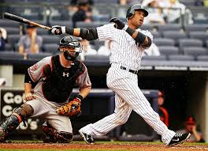

球員介紹
職業發展
羅賓森·荷西·坎諾·梅西達斯（西班牙語：Robinson José Canó Mercedes，1982年10月22日－），生於多明尼加共和國的聖佩德羅-德馬科里斯（San Pedro de Macoris）。之前是美國職棒大聯盟紐約洋基的先發二壘手，現今效力於紐約大都會。他的名字來自於棒球界的傳奇人物傑基·羅賓森。

坎諾在2005年5月3日首度登上大聯盟以代替當時的洋基二壘手Tony Womack。季賽結束後他繳出了打擊率0.297，14支全壘打及62分打點的成績，讓他在該季最佳新人的投票名列第二。
連到第2頁
連到第3頁
連到第4頁